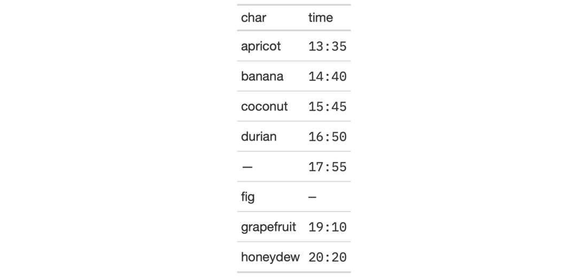
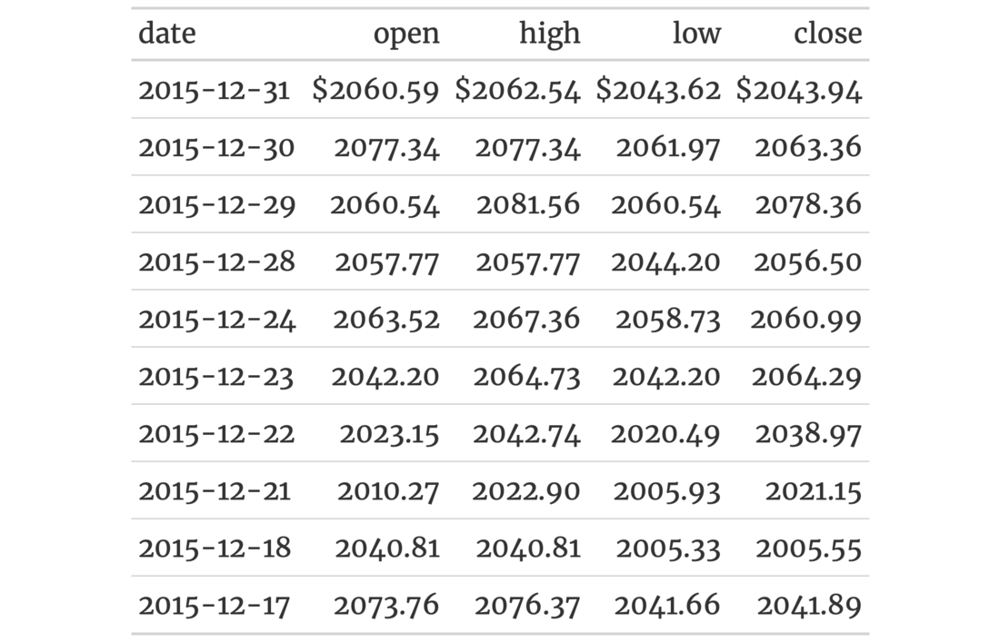

| google_font {gt} | R Documentation |
The google_font() helper function can be used wherever a font name should
be specified. There are two instances where this helper can be used: the
name argument in opt_table_font() (for setting a table font) and in that
of cell_text() (used with tab_style()). To get a helpful listing of fonts
that work well in tables, use the info_google_fonts() function.
google_font(name)
name |
The complete name of a font available in Google Fonts. |
An object of class font_css.


7-22
Other Helper Functions:
adjust_luminance(),
cell_borders(),
cell_fill(),
cell_text(),
cells_body(),
cells_column_labels(),
cells_column_spanners(),
cells_footnotes(),
cells_grand_summary(),
cells_row_groups(),
cells_source_notes(),
cells_stub_grand_summary(),
cells_stub_summary(),
cells_stubhead(),
cells_stub(),
cells_summary(),
cells_title(),
currency(),
default_fonts(),
escape_latex(),
gt_latex_dependencies(),
html(),
md(),
pct(),
px(),
random_id()
if (interactive()) {
# Use `exibble` to create a gt table of
# eight rows, replace missing values with
# em dashes; for text in the `time` column,
# we use the Google font 'IBM Plex Mono'
# and set up the `default_fonts()` as
# fallbacks (just in case the webfont is
# not accessible)
tab_1 <-
exibble %>%
dplyr::select(char, time) %>%
gt() %>%
fmt_missing(columns = everything()) %>%
tab_style(
style = cell_text(
font = c(
google_font(name = "IBM Plex Mono"),
default_fonts()
)
),
locations = cells_body(columns = time)
)
# Use `sp500` to create a small gt table,
# using `fmt_currency()` to provide a
# dollar sign for the first row of monetary
# values; then, set a larger font size for
# the table and use the 'Merriweather' font
# using the `google_font()` function (with
# two font fallbacks: 'Cochin' and the
# catchall 'Serif' group)
tab_2 <-
sp500 %>%
dplyr::slice(1:10) %>%
dplyr::select(-volume, -adj_close) %>%
gt() %>%
fmt_currency(
columns = 2:5,
rows = 1,
currency = "USD",
use_seps = FALSE
) %>%
tab_options(table.font.size = px(20)) %>%
opt_table_font(
font = list(
google_font(name = "Merriweather"),
"Cochin", "Serif"
)
)
}